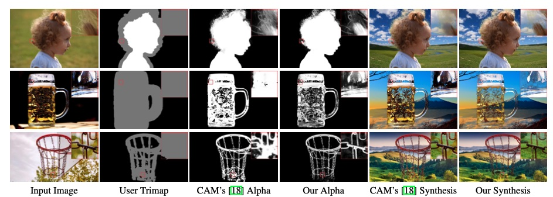
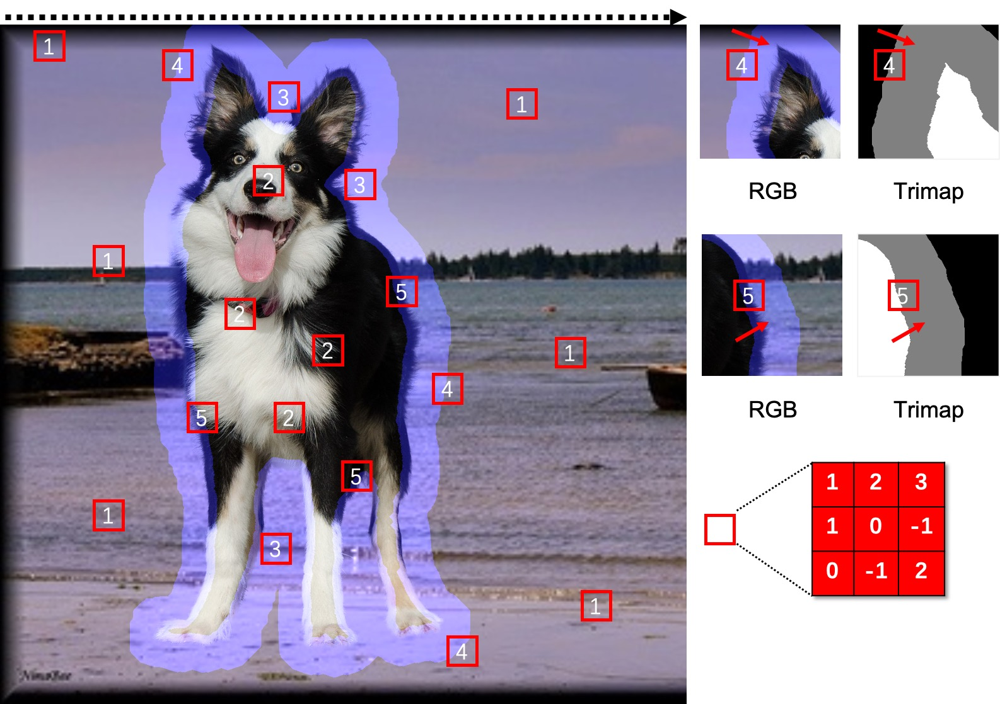
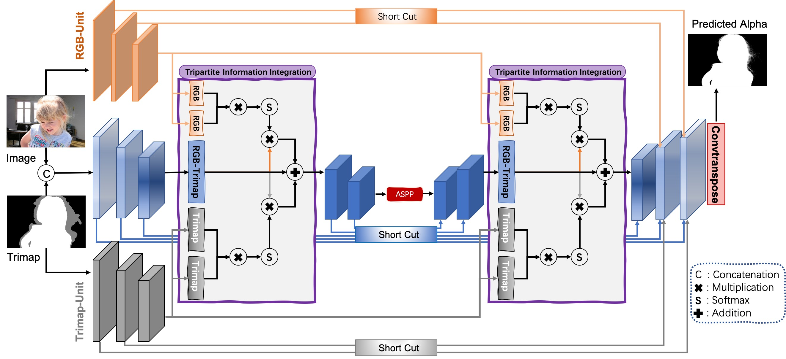

Visual comparisons of our method and Contex-Aware Matting [18] on the Real-World images. Both results are produced from the model trained on Adobe Composition-1K [55] dataset. Please zoom in to see the fine details.Abstract
With the development of deep convolutional neural networks, image matting has ushered in a new phase. Regarding the nature of image matting, most researches have focused on solutions for transition regions. However, we argue that many existing approaches are excessively focused on transition-dominant local fields and ignored the inherent coordination between global information and transition optimisation. In this paper, we propose the Tripartite Information Mining and Integration Network (TIMI-Net) to harmonize the coordination between global and local attributes formally. Specifically, we resort to a novel 3-branch encoder to accomplish comprehensive mining of the input information, which can supplement the neglected coordination between global and local fields. In order to achieve effective and complete interaction between such multi-branches information, we develop the Tripartite Information Integration (TI^2) Module to transform and integrate the interconnections between the different branches. In addition, we built a large-scale human matting dataset (Human-2K) to advance human image matting, which consists of 2100 high-precision human images (2000 images for training and 100 images for test). Finally, we conduct extensive experiments to prove the performance of our proposed TIMI-Net, which demonstrates that our method performs favourably against the SOTA approaches on the alphamatting.com (Rank First), Composition-1K (MSE-0.006, Grad-11.5), Distinctions-646 and our Human-2K. Also, we have developed an online evaluation website to perform natural image matting.
Motivation

Almost all of the previous methods pay close attention to the local areas around the transition regions and may ignore the coordination between global and local information (texture and colour similarity, positional correlation, etc.). As shown in the above figure, the convolution kernel slides from left to right when performing a convolution operation. Types 1, 2 and 3 focus only on locally uncrossed fields (unknown or known regions). Only 4 and 5 perform enlightened transfers, with information flowing from Bg and Fg to the transition region, respectively.
Method

Based on the aforementioned observation, in this paper, we propose to supplement the superimposed branch with two auxiliary Units, named RGB-Unit and Trimap-Unit, for mining global appearance details and location cues, separately. In addition, we developed a Tripartite Information Integration module to integrate complementary information sufficiently.
BibTex
@inproceedings{liu2021tripartite,
title = {Tripartite information mining and integration for image matting},
author = {Liu, Yuhao and Xie, Jiake and Shi, Xiao and Qiao, Yu and Huang, Yujie and Tang, Yong and Yang, Xin},
booktitle = {Proceedings of the IEEE/CVF International Conference on Computer Vision},
year = {2021}
}